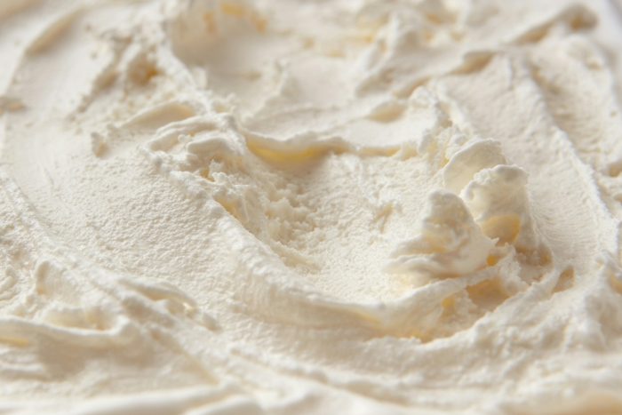

About Us
We are both college students with a great passion for Tallow. We are from Boise Idaho and have been in a happy relationship for over a year. We have been using tallow for a while and have seen our health completely transform!
Tallow Health Benefits
The biggest thing tallow does is moisturizes and soothes dry and cracked skin. Compared to other moisturizers this one is clean and not full of chemicals. Tallow also reduces inflamation and supplies the skin and body with vitamins A, D, and E. These vitamins are known to increase your immune system's response and defence against disease.
